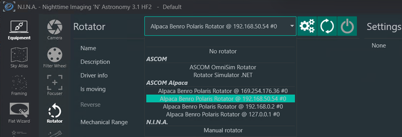
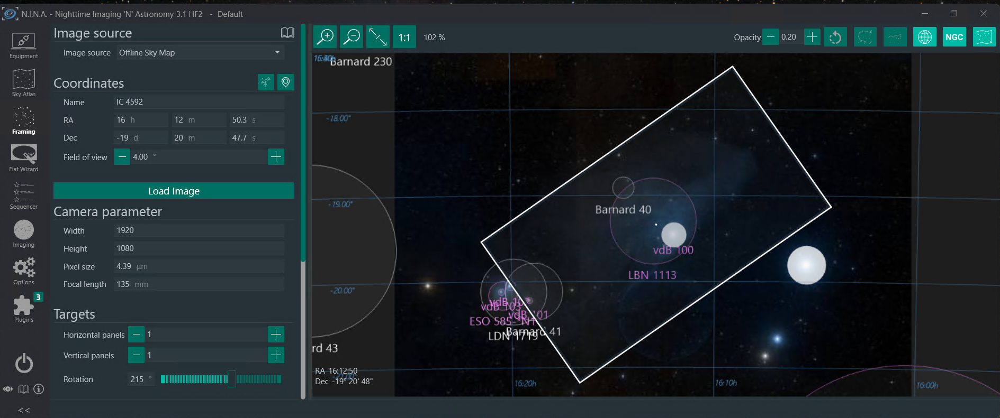
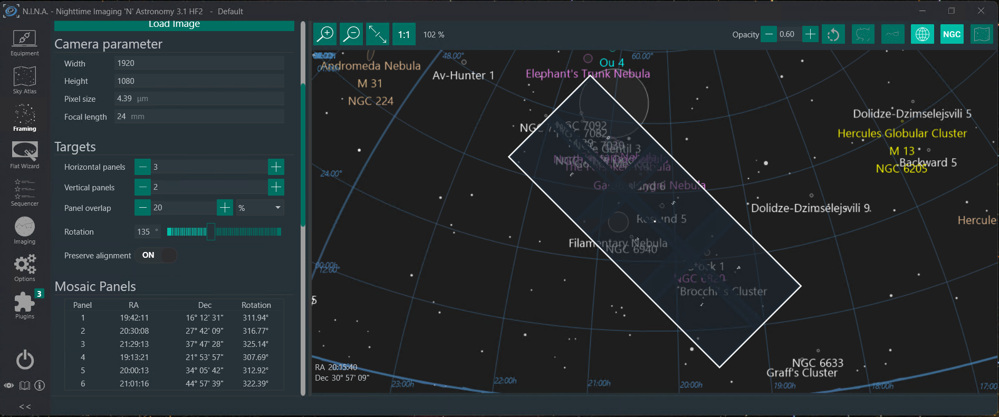
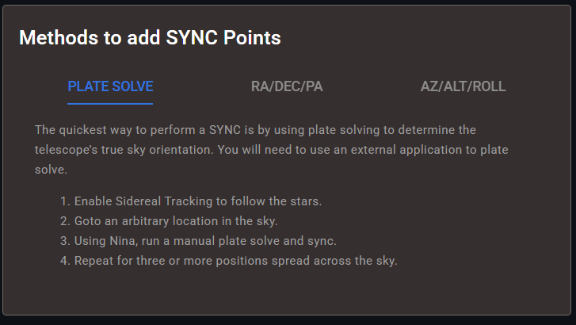
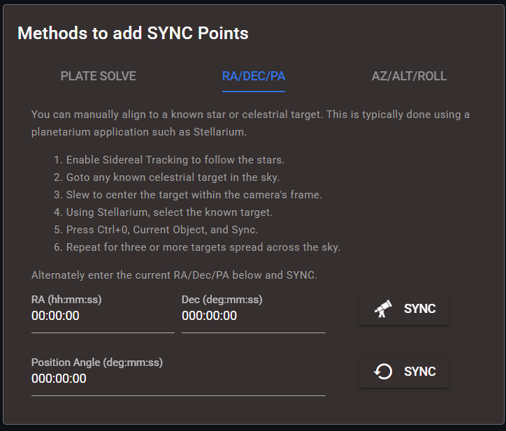
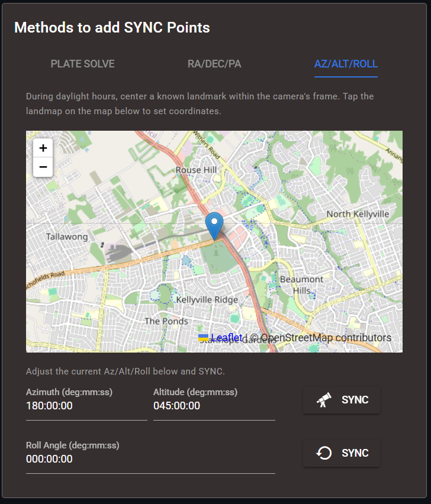
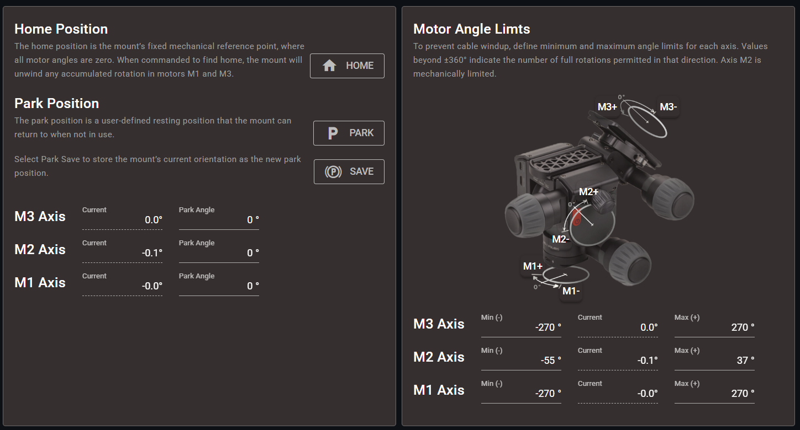

Advanced Motion Control Guide¶
Challenges | Rotator | Alignment | Safety | Filtering | Calibration | Coordinated Speed | PID Controller | Orbitals | Dev: API Testing | Dev: PID Tuning Utility
Challenges with existing Control¶
PODCAST LINK: 20 - Deep Dive Podcast on Alpaca Benro Polaris V2.0
The Benro Polaris mount, especially with its Astro Attachment, is popular among amateur astrophotographers for its compact design and app-driven interface. But while the hardware is excellent, the software can leave many users frustrated.
When version 1.0 of the Alpaca Driver was launched, it allowed advanced imaging and planetarium software to work with the Polaris. As more people used these applications, limitations quickly surfaced:
- Tracking drift was noticeable during long imaging sessions
- Promised features like three-star alignment never materialized
- Users lacked the precision tools needed for serious deep sky work
With version 2.0 of the Alpaca Driver, we introduce a complete rewrite of the motion control system. The motors are now driven using advanced algorithms that dramatically improve tracking accuracy, responsiveness, and stability.
This guide provides an overview of the Advanced Control Features of the Alpaca Driver, including:
- Kalman Filtering: Smooths the noisy raw telemetry from the mount into a steadier estimate of its position and velocity.
- Alpaca Rotator: Exposes the third (Astro) axis as an ASCOM Rotator so you can control roll or position angle for framing, mosaics and panoramas.
- Slewing: Lets the driver's own motion controller handle manual slews, moving the set point by Az/Alt/Roll or RA/Dec/PA. No longer use Benro Polaris firmware for gotos or slews.
- Advanced Goto: Moves to targets along a shortest-path trajectory with optimised acceleration and deceleration, and preserves roll and tracking state.
- PID Tracking: Uses a closed-loop, three-axis PID controller with feed-forward to hold the mount on its target during tracking.
- Orbitals Tracking: Enables non-sidereal tracking of the Sun, Moon, planets, satellites, comets and asteroids.
- Multi-Point Alignment: Uses the QUEST algorithm to build a correction model from three or more plate-solve syncs, compensating for tripod tilt, polar misalignment and cone error.
- Mechanical Alignment Correction: Fits M2 and M3 offsets (how the camera sits on the head) and the M2 scale with every alignment, cutting typical alignment and goto errors from about an arcdegree to a few arcminutes.
- Slew & Center Correction: Reduces the number of corrective slews needed to centre a target, using either Zero Last Residual, Local Gaussian Adjustment or Sync Guiding Adjustment (recommeded).
- PEC Drift Correction: Learns the remaining slow drift in RA and Dec from guiding corrections and applies proactive fixes every 200 ms.
- PEC Worm Gear Correction: Corrects each motor's worm gear wobble (repeating every 6° of motor rotation, typically around 35 minutes while tracking) from a profile measured once by a calibration test, with no guiding needed.
- Sync Guiding (Plate-solve): Treats a plate-solve sync taken without slewing as a guiding correction, so you can guide with the main camera and no guide scope.
- Pulse Guiding (Guide-camera): Accepts micro-corrections from guiding software such as PHD2 during exposures, with separate RA and Dec guide rates (0.75x to 1.0x sidereal is recommended).
- Coordinated Speed Control: Drives all three motors together within the Polaris's shared slow-speed setting, and plans gotos, roll changes and jogs as smooth motor speed profiles, for steadier tracking and less drift and overshoot.
- Backlash Compensation: Drives each motor through its gear backlash at the end of a goto, so Slew & Center corrections land first time (not through a tracking reversal, which is left to the guider).
For a comprehensive technical reference on the updated kinematics, refer to kinematics.md.
Alpaca Rotator¶
VIDEO DEMO: 23 - Alpaca Rotator Framing in Nina and Stellarium
The Alpaca Rotator feature is an advanced capability within the Alpaca Benro Polaris (ABP) Driver, specifically designed to enhance precision framing and complex imaging sequences for deep-sky astrophotography.
This guide outlines the purpose, setup, control concepts, and practical usage of the Alpaca Rotator, drawing on the capabilities introduced in the version 2.0 driver.
I. Introduction and Core Function¶
The Alpaca Rotator functionality unlocks and controls the third axis of the Benro Polaris mount.
- Primary Purpose: The main goal of the Alpaca Rotator is to help achieve better framing of deep sky objects and assist significantly with mosaics and panoramas.
- ASCOM Standard: The feature is implemented by supporting the ASCOM Alpaca Rotator Interface v3 standard.
- Co-ordinate independance: The rotator enables rotation around the camera’s boresight while maintaining the existing Azimuth/Altitude (Az/Alt) or Right Ascension/Declination (RA/Dec) coordinates.
- Roll Angle Preservation: Unlike the standard Polaris firmware, the ABP Driver’s new GOTO commands preserve the roll angle instead of automatically resetting it to zero after every GOTO operation.
II. Key Concepts: Roll Angle vs. Position Angle¶
The ABP Driver allows control over rotation using two coordinate systems: Roll Angle (in the geographic system) and Position Angle (in the equatorial system).
Roll Angle (Az/Alt/Roll)¶
The roll angle is generally considered intuitive.
- It represents the angle or tilt of the camera relative to the horizon.
- The driver automatically calculates how the mount needs to move all motors to achieve a specified roll (e.g., a 30° roll) while keeping the Azimuth and Altitude coordinates consistent.
- The roll angle is considered related to Astro Axis, but in reality it requires all motors to be moved in co-ordination.
Position Angle (RA/Dec/PA)¶
Position angle is the angle between the direction to the celestial north and the top of the image frame, measured counterclockwise from north. The Position Angle (PA) is a consistent reference used for framing that is independent of the observer's location. It is often not as intuitive as the roll angle.
- The Position Angle is defined in the equatorial coordinate system.
- A PA of 0 degrees means the top of the image frame is pointing toward the celestial North Pole.
- Angles increase in a counter-clockwise fashion.
- The Position Angle is equal to the Roll Angle plus the Parallactic Angle.
Parallactic Angle¶
The Parallactic Angle is the angle between the direction to the celestial north and the zenith, measured at the position of a celestial object in the sky. It describes how the sky appears to rotate around the object. The Paralactive Angle is unique for every Azimuth/Altitude orientation of the mount. It can be displayed in applications like Stellarium. The Driver uses the Parallactic Angle to calculate the Position Angle.
III. Rotator Setup and Control¶
Connecting in NINA¶
To enable rotator control in third-party applications like NINA (Nighttime Imaging 'N' Astronomy):

- In NINA’s Equipment setup, navigate to the Rotator equipment section.
- Perform a device discovery to find the Alpaca Rotator.
- Connect to the device. NINA will then have full control of the rotation axis.
Control via Alpaca Pilot App¶
The Alpaca Pilot App offers direct, real-time control over the rotation axis.
- Dashboard Viewing: The Dashboard features Zoomable Radial Dials that display the mount’s current roll and position angle (PA) coordinates. You can quickly switch between Azimuth/Altitude/Roll and Right Ascension/Declination/Position Angle views.
- Direct Input: You can click on the set point and directly enter a numerical value for the desired roll or position.
- Presets (Az/Alt Mode): When in Azimuth/Altitude mode, you can use the floating action button on the roll set point to quickly navigate to common presets, such as zero degrees or plus or minus 45 degrees.
- Movement: The driver calculates the best way to move the head to the target roll/PA location, and the green arrow indicates the desired point. Slew commands now support moving by Azimuth, Altitude, and Roll coordinates.
IV. Rotator in Imaging Applications¶
The Alpaca Rotator is crucial for advanced framing techniques, particularly when using software like NINA and Stellarium.
Framing with NINA¶
The rotator function is natively integrated with NINA’s framing capabilities.

- Framing Assistant: In NINA's Framing Assistant, you can change the proposed rotation angle (Position Angle) to see the framing adjust visually.
- Rotation View: Enabling the rotation view within the Framing Assistant allows you to change the orientation of the image perspective, which makes the framing process easier.
- Sequenced Correction: During an imaging sequence, after NINA performs a plate solve and determines the position angle of the captured image, it will correct any angular offset by issuing minor adjustments to the rotator to correctly position the panel.
Mosaics and Panoramas¶
The rotator enables precise, structured imaging for large targets.

- Tiled Mosaics: When planning a tiled mosaic (e.g., three wide and two high), NINA calculates the Right Ascension and Declination for each panel.
- Preserving Alignment: By enabling "preserve alignment" in NINA, the system automatically recalculates the specific position angle for each individual panel, ensuring the overall mosaic results in a rectangular image.
Integrating with Stellarium¶
To visualize your framing accurately in Stellarium, an adjustment is necessary.
- Coordinate Mismatch: Stellarium’s internal "rotation angle" setting uses a different frame of reference than the standard ASCOM Position Angle used by the driver and NINA.
- Correcting the Angle: To achieve the same framing in Stellarium as calculated in NINA (e.g., a proposed PA of 140°), you must input the negative of the Position Angle into Stellarium’s rotation angle setting (e.g., -140°).
Aligning the Rotator¶
We recommend performing at least one Position Angle sync (see Method 2 below) at the start of each imaging session. This establishes the roll offset between the mount's Roll Angle and the true sky Position Angle, the zero reference the PID Controller uses for sidereal tracking.
This matters because to maintain a constant Position Angle during tracking, the mount's Roll Angle must continuously change to compensate for the evolving parallactic angle as the target moves across the sky. Since the three motor axes are coupled, a poorly calibrated roll offset will subtly corrupt pointing and tracking accuracy across all axes.
If you have a physical camera rotator, note that rotating it will shift the position angle seen by the camera sensor. It will not update the Position Angle reported by the Driver or the roll offset, so tracking will not be affected. If you want the Driver to report the correct Position Angle, perform a re-syncing after using the physical camera rotator.
Alignment Models¶
VIDEO DEMO: 24 - Multi Point Alignment and Tripod Tilt
The V2.0 Alpaca Driver re-engineered the alignment and sync interfaces to support two distinct alignment methods, transforming how the Benro Polaris (BP) achieves accurate polar alignment. This guide outlines the features and operational principles of the two primary alignment modes; Single-Point and Multi-Point Alignment.
I. Single-Point Alignment (SPA)¶
Single-Point Alignment (SPA) is the more traditional alignment method supported by the Driver. This is the default alignment method with the V2.0 Driver:
- Function: It mirrors the standard Polaris method, syncing the mount to a single known celestial position.
- Correction: Corrections resulting from the sync apply globally.
- Requirement: This method relies on precise tripod leveling.
- Limitation: SPA can be susceptible to drift.
- Usage: Alignment can be achieved simply with a single plate-solve.
When using the Pilot App for initial setup, you can skip the Compass Align and Star Align steps, as the driver will use a default value (assuming the mount is pointing south at 45 degrees altitude). The first plate-solve will correct any misalignment.
The Single Point Alignment is simpler to perform and is still a valid method for alignment of your Benro Polaris. Only progress to Multi Point Alignment when you are prepared to monitor and fine tune the alignment model.
II. Multi-Point Alignment (MPA)¶
Multi-Point Alignment (MPA), is the advanced alignment feature recommended for achieving high precision:
- Function: This method builds a detailed correction model from three or more known synchronization (SYNC) positions.
- Compensation: The model compensates for multiple sources of error that a single point cannot correct, including tripod tilt, polar misalignment, cone error, and other mechanical offsets.
- Algorithm: The technology is adapted from the QUEST algorithm, which uses a closed-form, quaternion-based solution to provide a precise result.
- Benefit: A major advantage of MPA is that users no longer need to obsess over leveling their tripod, as the model is designed to detect and correct for tilt.
- Procedure: To perform Multi Point Alignment, you simply perform multiple synced plate solves. Each new sync automatically adds to the Driver's knowledge of the Polaris alignment at different orientations and times.
Here is the procedure for performing Multi-Point Alignment and information regarding the necessary synchronization points, based on the version 2.0 driver and its integration with applications like NINA (Nighttime Imaging 'N' Astronomy).
III. Performing Multi-Point Alignment¶
A. Initial Mount Setup¶
Before starting the alignment process, ensure the mount is prepared and connected to the ABP Driver:
- Polaris Mode: Power on the Benro Polaris (BP) mount and use the BP App to switch it to Astro Mode.
- Skip Standard Alignment: You can skip the standard Benro Polaris Compass Align and Star Align steps, as the driver will use default values (assuming the device is pointing South at 45 degrees altitude).
- Physical Setup: Mount your camera, place the tripod outside, and level the Benro Polaris as accurately as possible (though the MPA model compensates for tilt, good leveling remains important for accuracy).
- Focus: Perform a NINA Autofocus run.
- Start Tracking: Enable sidereal tracking from Nina or Alpaca Pilot
B. Initiating Alignment via Plate Solving¶
The Multi-Point Alignment model is built by performing synchronization (SYNC) operations, typically initiated after a plate solve. A single, accurate sync is generally sufficient to align the Polaris initially:
- Enable Multi-Point Alignment: Use Alpaca Pilot App to enable MPA from either the Settings page or the Alignment page.
- Manual Plate Solve and Sync: Perform a manually initiated plate-solve and sync.
- Plate solving uses the camera image to identify the star patterns and precisely determine the mount’s orientation.
- The ABP Driver automatically aligns the Benro Polaris with the resolved coordinates whenever a
Synccommand is performed.
- Alignment Confirmation: Once this first plate-solve and sync is successful, the Polaris is now considered aligned.
C. Polar Alignment¶
To assist the multi-point model to be as polar aligned as possible, we recommend performing a plate-solve at your Celestrial Pole. This will ensure a point for the Celestrial Pole is in the model and help reduce residual error at that location. Use the following procedure:
- Launch Alpaca Pilot: from a web browser or via Nina Equipment setup cogs.
- Search the catalog: By typing 'pole' into the search bar
- Initiate Navigation: Once a target is selected, click the appropriate GOTO button to immediately navigate to that location.
- Wait for Completion: Ensure the mount has fully stopped before proceding
- Manual Plate Solve and Sync: Perform a manually initiated plate-solve and sync.
D. Target Trajectory Alignment¶
Any remaining points in the model should be placed along the trajectory of your imaging target. You can perform just one plate-solve at your target, or if you are performing a long imaging session you may want to perform a couple of plate-solves along its trajectory.
- Navigate to your target: Use Alpaca Pilot, Stellarium or Nina to select and navigate to the current location of your target
- Optionally Naviagate along target trajectory:
- Decrease Right Ascenscion Use Alpaca Pilot to decrease the Right Ascension position by an hour or two. Enter 'd-2' into the Right Ascension setpoint field.
- Wait for Completion: Ensure the mount has fully stopped before proceding
- Manual Plate Solve and Sync: Perform a manually initiated plate-solve and sync.
- Navigate back to your target: Navigate back to the current location of your target
- Wait for Completion: Ensure the mount has fully stopped before proceding
- Manual Plate Solve and Sync: Perform a manually initiated plate-solve and sync.
E. Review Model Residuals¶
After you add any additional sync points to the model, you should review the model residuals on the Alignment page in Alpaca Pilot. Each sync point in this list shows a residual; the angular difference between where the mount reported it was pointing and where the multi-point alignment (QUEST) model predicts it should point, given the other sync points. Lower residuals indicate a better fit.

Outlier residuals are flagged with an alert icon, Amber for residual above 5°, and Red for residual above 10°. The likely causes of high residuals include: poor centering before sync, mount movement during sync, sparce or clustered geometry, site location incorrect, or tripod movement. Amber and red sync points don't fit the alignment model well and should be reviewed for deletion, since including them will pull the model's accuracy down across the whole sky.

Delete a sync point by clicking on the cross next to the point. Note that if tracking is enabled when you delete a sync point, the model will adjust, and the mount will shift the head to its new understanding of where the current target is located. If this varies from its current location, then perform another manually initiated plate-solve and sync.
A very good multi-point alignment model will have all sync points with residuals of arc-seconds, and none with arc-minutes or whole degrees of residuals.
F. Reseting Multi-Point Alignment on Re-Setup¶
From ABP Driver v2.2 onwards, the Multi-Point Alignment model is saved to disk and restored automatically on driver restart, so your alignment survives restarts without needing to re-sync. You can now restart the driver or reboot the MiniPC mid-session and resume imaging without losing your alignment.
However, if you physically move or re-level the tripod, the saved model will no longer match your new setup and must be reset. To clear all sync points:
- Open Alpaca Pilot and navigate to the Alignment page.
- Switch to Single-Point Alignment. This clears all saved sync points.
- Switch back to Multi-Point Alignment.
- Perform a fresh Multi-Point Alignment as described in sections B–E above.
IV. Adding Sync Points to the model¶
By adding sync points, you help the Driver build a geometric model of your mount’s orientation relative to the sky. There are three approaches to adding sync points to the model.
Method 1: Sync via Plate Solve¶

This is the most automated and accurate method. When your imaging software performs a plate solve, it determines the exact celestial coordinates your camera is pointing at. ABP uses this data to add a sync point to the alignment model.
- Best for: Astrophotographers using tools like NINA and ASTAP
- How: After a successful plate solve, ABP automatically adds the sync point
- Benefit: High-precision alignment with minimal manual input
Method 2: Sync via RA/Dec/PA Coordinates¶

You can manually add a sync point by specifying a known celestial target using Right Ascension and Declination.
- Best for: Users targeting known stars or objects
- How: Manually align the image with the known target then confirm the Sync with an application like Stellarium or Alpaca Pilot
- Benefit: Useful when plate solving isn’t available or for quick calibration
Nina does not sync the plate-solved Position Angle with the Alpaca Driver. We recommend that you do this manually at least once per imaging session.
- Perform a plate-solve and note the Roll Angle reported.
- Using Pilot, open the Alignment Page.
- On the Methods to add SYNC Points panel, open the RA/DEC/PA tab.
- Manually enter the Position Angle in decimal degrees.
- Click the Rotator Sync button.
Method 3: Sync via Geographic Landmark (Azimuth and Altitude)¶

ABP now supports syncing using azimuth and altitude, which means you can align to visible landmarks, even during the day or without a star field. At your observing site, you might have a visible landmark like a high-tension power line or surveyers mark. If you point your camera directly at it:
- Use the Pilot app to click on the landmark on the map in the Alignment page.
- ABP draws a line from your site to the landmark and calculates its azimuth and altitude
- Click Sync to add it to the model
Summary: Sync Methods Comparison¶
| Method | Input Type | Best Use Case | Automation Level |
|---|---|---|---|
| Plate Solve | RA/Dec from image | Imaging sessions | Fully automatic |
| Celestial Target | Manual RA/Dec | Known star/object | Semi-manual |
| Geographic Landmark | Az/Alt from Pilot app | Daytime or visual targets | Manual or assisted |
V. Reseting your Polaris Alignment¶
If you connect to the Polaris and notice that the Azimuth, Altitude, or Roll coordinates appear incorrect even when the mount is in the home position, you can reset the alignment to a known state using the following steps:
-
Clear Sync Points
- Open the Alignment Page
- Switch to Multi‑Point Alignment
- Delete all existing sync points in the model
-
Switch to Single‑Point Alignment
- Change the alignment mode to Single Point
-
Reset Axes
- Open the Connect Page
- Click Reset Axes to reset each of the Polaris axes
-
Compass Align
- On the compass alignment step, click SKIP
-
Single Star Align
- On the single star alignment step, click SKIP
This procedure resets the single‑star alignment model in Polaris to the coordinates defined under the Single Star SKIP button. From here, you can:
- Perform a plate solve to establish accurate positioning
- Enable Multi‑Point Alignment to build a more refined alignment model
Equipment Safety¶
VIDEO DEMO: 25 - Home, Park and Motor Angle Limits
The Benro Polaris mount, while compact and powerful, has a known issue: it can rotate far enough to wrap cables tightly around the tripod, risking damage to cables, camera and mount. This kind of entanglement can lead to costly repairs or interrupted imaging sessions.

Version 2.0 of the Alpaca Benro Polaris (ABP) Driver introduces essential safety mechanisms to protect your gear and simplify your setup workflow. These updates address real-world risks and frustrations reported by users — especially around cable management and unexpected mount behavior.
To prevent these issues, the driver now includes:
-
Motor Angle Limits
These define safe rotation boundaries for each axis, ensuring the mount never turns far enough to cause cable strain or collision. You can customize these limits based on your setup. -
Revised Find Home Behavior
The updated Find Home routine uses sensor feedback to return the mount to a known, safe orientation, without taking shortcuts and over-rotating cables. -
Improved Park Functionality
The Park feature now respects motor limit, allowing you to safely stow the mount at a custom location, again without risking cable wrap or tripod collisions.
A. Motor Angle Limits¶
The driver tracks the actual physical rotation of the mount's motors (M1, M2, M3) using Motor Angles. Unlike standard coordinates (like Azimuth), which wrap around (e.g., 360° returns to 0°), the motor angle does not wrap around; it continuously records how far the motor has moved from its home position. These angles are also not dependant on one another, so the M1 angle is not effected by the Astro Axis.
You can define a maximum amount of rotation in each direction for each motor angle to prevent potential twisting of cables.
- Limit Breach: If a motor axis exceeds its defined rotation limit (e.g., Motor 3 goes beyond \(270^\circ\)), the system will issue a notification banner, and all control to the Polaris will be stopped. This halt prevents further motion, including tracking, to protect the cables.
- Reviewing the Alarm: You must click the review button on the banner, which takes you to the settings page, where you can inspect which alarm limit was exceeded (e.g., M3 current value > maximum limit).
- Resetting the Alarm: You must click the reset button to acknowledge the limit breach. This action provides a one-minute window during which you can move the mount and correct the rotation.
- Clearing the Alarm: The notification banner and limit indication will disappear once the motor axis is brought back within the defined limits.
Important Safety Note: Although these safety measures are built into V2.0, we advise against operating the Polaris unattended, as some failure modes may still be beyond the driver's control.
B. Home Functionality¶
The new Home functionality moves the mount based entirely on motor angles:
- Action: When you click "Home," the driver commands the motors to wind back so that the M1, M2, and M3 Motor Angles are all zero.
- Orientation: If your mount is set up pointing south, the Home position (0, 0, 0 motor angles) will typically result in an azimuth of \(180^\circ\), an altitude of \(45^\circ\), and a roll of \(0^\circ\).
- Alternative Reset: If you need a complete the joystick double tap function of the Benro Polaris App, an axis reset function is still available, but it is located only on the Alpaca Pilot Connect page.
B. Park Functionality¶
The Park function provides a customisable, safe resting position for mounting and unmounting equipment.
- Motor-Based: Like the Home function, the Park function operates by defining target motor angles, not coordinate values.
- Default: By default, the Park position is set to motor angles of \((0, 0, 0)\), making it identical to the Home position.
- Customisation: You can customize the Park angle from the settings page. This is often useful, particularly when using an L-mount for your camera.
Setting a Custom Park Position:¶
- Access Settings: Navigate to the settings page within the Alpaca Pilot App.
- Adjust Motor Angles: Use the diagrams to move the motor angles to a desired orientation.
- Example: Move the M3 axis to around \(90^\circ\) to easily access the lever and tightening knob on the camera mount.
- Example: Bring the M2 axis down to approximately \(-45^\circ\) to make the plate level, facilitating camera mounting and unmounting.
- Save: Click the Save button to update the motor angles for the Park location.
Unparking the Mount:¶
- Execution: When the mount successfully reaches the custom Park location, a yellow banner will appear on the dashboard.
- Function Lock: In the Park state, most functions are disabled.
- Resuming Use: To resume normal use of the mount (e.g., initiating a GOTO or tracking), you must click the designated button to unpark it.
Kalman Filter¶
VIDEO DEMO: 31 - Setting Overrides, Kalman Filtering and PWM
The Kalman Filter is a core component of the motion control system introduced in ABP Driver v2.0. It plays a critical role in improving the accuracy, stability, and responsiveness of the Polaris mount by filtering noisy sensor data and enhancing the system’s understanding of its own motion.
Note: Kalman Filter Tuning is optional. You can skip this step if you're not ready to dive in.
I. Purpose and Function¶
The Kalman Filter is designed to solve a fundamental problem: sensor noise. The Polaris mount reports its orientation every 200 milliseconds, but these readings can fluctuate significantly — especially at arcsecond-level precision. The key benefits of the Kalman Filter include:
-
Noise Reduction
Raw telemetry from the mount is often jittery. The Kalman Filter smooths out these fluctuations, removing spikes and inconsistencies that would otherwise degrade tracking accuracy. -
State Estimation
Rather than relying solely on raw data, the filter combines:- Measured telemetry (what the mount says it's doing)
- Predicted motion (what the system expects based on recent behavior)
This fusion produces a more reliable estimate of the mount’s true position and velocity.
II. Analogy: A Stabilizer in the Fog¶
Imagine trying to track a fast-moving object while standing on a rocking boat in thick fog. Your view is shaky, your footing unstable, and your guesses are rough at best.
The Kalman Filter is like a digital stabilizer:
- It predicts where the object should be
- It compares that prediction to your noisy observations
- It fuses both into a much clearer, more stable estimate
This is exactly what the ABP driver does; giving your mount a steadier, smarter sense of where it’s pointing, even when the raw data is unreliable.
This is particularly important for M3, whose position updates less frequently than the other motors. The Kalman Filter uses M3's velocity to predict its position between updates, helping maintain accurate pointing estimates during fast movements such as rolls and polar-alignment changes.
II. Tuning and Diagnostics¶
While the default settings are well-optimized, the Kalman Filter Tuning page in the Alpaca Pilot App allow deeper insight and control. To access the Kalman Filter Tuning Page, Open the Alpaca Pilot App and naigate to KF Tuning under the Performance Tuning in the Side Menu
A. What You Can Do¶
- Visualize performance using real-time charts showing:
- Blue line: raw sensor data
- White line: filtered estimate
- Adjust filter parameters to control how much trust is placed in raw telemetry vs predicted motion
- Test slow movement to observe how the filter responds to subtle tracking changes
B. Example Parameters Explained¶
-
Angular Position Measurement Error
This setting tells the filter how noisy you believe the raw data is.- Set it low (e.g. near zero) if you trust the sensor readings completely — but expect a jittery output
- Set it higher to smooth out fluctuations and get a more stable estimate
-
Kalman Gain
This value is a key parameter in the Kalman Filter algorithm that determines how much weight to give to new measurements versus the filter’s internal prediction. It controls how much the system “trusts” the incoming sensor data compared to its own estimate of what should be happening.- A high Kalman Gain means the filter relies heavily on the latest measurement — making it more responsive but potentially noisier.
-
A low Kalman Gain means the filter favors its prediction — resulting in smoother output but slower reaction to changes.
-
If you increase the measurement error, make sure the Kalman Gain stays above 0.15. A typical stable value is around 0.15 to 0.25, which balances responsiveness with smoothness
Motor Speed Calibration¶
VIDEO DEMO: 32 - Calibrating Speed Control for your Polaris
The Motor Speed Controller Calibration feature in ABP v2.0 allows advanced users to fine-tune motor behavior for their specific Polaris mount. While the system works well with default values, calibration can improve tracking precision, especially for long-exposure astrophotography.
You can access the Motor Speed Calibration Tool by opening Alpaca Pilot and navigating to Calibration under Performance Tuning in the side menu
Note: Calibration is optional. You can skip this step if you're not ready to dive in.
A. Preparing for the Test¶
Before running a motor speed calibration test:
- Ensure the Polaris mount can move freely
- Remove any camera or payload to avoid strain
- You can perform this test during the day
B. Running the Calibration¶
-
Select an Axis
Choose which motor axis to test:- M1 – Azimuth
- M2 – Altitude
- M3 – Rotation (Astro Axis)
-
Start the Test
- Click Test to begin
- If no specific test is selected, the driver will test all available speeds
- The mount will move through a series of commands, measuring actual speed at each step
-
Monitor Test Progress
- Monitor the completion of each test in the table view.
- You can ABORT and stop the tests at any time.
D. Reviewing Results¶
After testing:
-
View the Results Table showing:
- Commanded speed
- Measured speed
- % Change from baseline
-
Standard deviation
-
A Low %Change and Low Test Stdev indicate a reliable test
WARNING: If a test shows high standard deviation or unexpected large change, you can and should retest that speed individually. Select the test in the table and click Test again.
E. Approving Results¶
Once satisfied with the results of the Motor Speed Calibration tests:
- Select individual tests to approve, or leave all unselected to approve everything
- Click Approve to apply the new calibration
- The driver will now use these values instead of defaults
NOTE: Each axis (M1, M2, M3) maintains its own calibration profile
D. Final Thoughts¶
Calibrating your motor speed controller ensures:
- More accurate slews
- Smoother tracking
- Better guiding performance
- Potentially improved deep-sky imaging results
NOTE: With Coordinated Speed Control on, only the fast-speed calibration is used: slow speeds come from the Polaris firmware's own table.
Coordinated Speed Control¶
Coordinated Speed Control changes how the driver commands the Polaris motors. The Polaris's slow speeds use one speed level shared by all three axes, so setting a speed on one motor changes the others. Coordinated Speed Control chooses that shared level for all three motors together, then fine-tunes each motor's speed by switching it between neighbouring speeds. It also plans every move as a smooth speed profile the motors can actually follow.
A. What It Changes¶
- Tracking: Holds all three axes at their required speeds at the same time, which markedly improves tracking at low altitudes and near zero roll. It also responds faster to guiding corrections.
- Gotos: Each goto is planned at the start, with a speed profile the motors can follow:
- Long gotos (the pointing moving more than 15°) prioritise speed and move in motor-angle space: each motor moves directly to its target position, with all motors arriving as quickly as possible. If multiple motor-angle solutions can achieve the target, the driver selects the fastest solution that respects motor limits and avoids cable wrap.
- Short gotos (15° or less) follow a path that moves the pointing smoothly and naturally towards the target. Changes in M3 are coordinated with M1 and M2 to maintain the pointing direction throughout the move. This allows the system to perform rolls while preserving the current pointing, rather than swinging away from the target.
- Gotos while tracking go straight in motor angles to where the target will be when the mount arrives. Very small moves, such as dithers and Slew & Center corrections, are executed at the slower, more precise speeds to ensure accurate positioning.
- Roll and Position Angle Changes: The mount maintains the same Az/Alt when not tracking, or the same RA/Dec when tracking, while rotating the camera. The rotation runs at the motors' full speed. The pointing wanders a little during it, more when M1 and M3 don't yet have approved fast-speed calibration tests (a motor running off its baseline speed pulls the pointing further off), and ends on target. At low altitudes, M1 and M3 must rotate further to achieve the same camera rotation, so large changes take longer. A rotation past what the motors can reach at that altitude goes to the nearest one they can reach, keeping the pointing.
- Jogging near Altitude 0: On a level mount, jogging Az/Alt through M2 = 0 (where M1 and M3 turn about the same axis) moves the pointing and lets the camera rotation follow, instead of swinging M1 and M3 to hold it.
- Flips: Some gotos, such as those crossing from negative to positive altitude, require a mount flip, with M1 and M3 each rotating by about 180°. The driver determines this at the start of the goto and moves directly to the target in motor-angle space. Where motor limits permit, M1 and M3 rotate in opposite directions to minimise cable wrap. The two flip solutions overlap by about 8°, allowing moves from positive altitude down to approximately −8°, or from negative altitude up to approximately +8°, without a flip.
- Unwinds: If the nearest motor-angle solution would take M1 or M3 beyond its limit, the driver takes the alternative route around instead. In Equatorial Mode (Wedge), the driver also preserves at least 120° of tracking range on M1 (about 8 hours), performing a full-turn unwind during a goto if necessary rather than interrupting a session. While these moves are in progress, Alpaca Pilot displays FLIP CW, FLIP CCW or UNWIND in its status.
- Jogging: Ramps up to and down from jog speeds, which reduces overshoot when you release a jog.
- Goto Completion: During a goto, the driver holds the PID integral to prevent integral windup from disturbing tracking afterwards. A goto is marked complete only when the mount reaches the target and the motors have settled. With Backlash Compensation enabled, this also requires the backlash to be taken up. If the goto has not completed within 45 seconds beyond its planned move time, the driver completes it anyway. The log records the outcome
GOTO complete on target,TIMED OUTorSTOPPED AT A MOTOR LIMITalong with the elapsed time and final error for each motor. A rotator move (roll or position angle) completes the same way, sharing the timeout, which restarts with each move requested: a goto timing out also completes a rotate asked for during it. It logsROTATE complete ..., and until then the Pilot shows Rotating and ASCOMIsMovingis true. - Faster Motions: Above the slow-speed range (approximately 0.24°/s), the driver uses the Polaris's fast mode, allowing each motor to run at up to its own maximum speed.
B. Turning It On or Off¶
In Alpaca Pilot, open the Settings page and use the Coordinated Speed Control toggle under Advanced Control Features. The change takes effect immediately, with no restart. It is on by default; turn it off to return to the previous speed controller and motion planning.
C. Motor Speed Calibration¶
With Coordinated Speed Control on, slow speeds always come from the Polaris firmware's own speed table, so their calibration isn't used. Fast speeds use the Motor Speed Calibration of each motor once its fast-speed tests are approved, and the built-in baseline until then. Calibrating the fast speeds makes the planned moves more accurate, so gotos finish closer to their planned times. A motor whose calibrated fast speeds don't rise with the commanded speed keeps the baseline, and the log warns about it.
PID Controller and Performance Tuning¶
VIDEO DEMO: 33 - PID Control and Kinematics
The Proportional-Integral-Derivative (PID) Controller is the core component of the revised motion control system in the Alpaca Benro Polaris Driver Version 2.0. While the system works well with the default parameters, this section is designed for advanced users who wish to diagnose poor tracking or fine-tune the controller’s performance.
1. Purpose and Role of the PID Controller¶
The PID Controller is responsible for closed-loop speed regulation and is essential for achieving stable tracking. It works by measuring the error between where the mount should be (the Set Point) and where it actually is (the Present Value).
The driver utilizes a 3-axis PID controller for closed-loop motor positioning and explicitly handles zero crossover to eliminate the need for traditional backlash correction. The PID controller sums up the proportional, integral, derivative, and feed-forward values to determine the precise motor speed required to drive each of the three motors in the Polaris head.
2. Accessing the PID Tuning Interface¶
You can access the PID tuning pages via the Alpaca Pilot App, which provides a detailed visualization of the controller’s real-time performance.
- Open the Alpaca Pilot App (accessible via browser or the settings cog in NINA’s Equipment tab).
- Navigate to the side menu and choose the PID Tuning.
The PID Tuning page provides an overview of all three axes, allowing you to monitor tracking performance. You can switch between viewing axes in three different domains a. equatorial (Right Ascension, Declination, Position Angle); b. topocentric (Azimuth, Altitude, Roll) and c. motor (M1, M2, M3) coordinates.
3. Diagnosing Tracking Performance (Steady State)¶
To assess how well the mount is tracking, focus on the RMS Error and the behavior of the chart lines.
A. RMS Error¶
The RMS (Root Mean Square) error measures the running average of how far the mount’s position deviates from its intended position, measured in arcseconds.
- Goal: The lower the RMS error, the better.
- Performance Benchmark: An RMS error under three arc seconds is considered very good.
B. Analyzing the Position Charts (Top Charts)¶
These charts display the target position versus the actual position for each coordinate.
- Set Point (Green Line): This is the target position the mount is trying to achieve. During sidereal tracking, the set point is expected to be flat, steady, and horizontal when viewed in Equatorial Coordinates.
- Actual Position (White Line): This is the mount’s measured position.
- Ideal Tracking: The white line should very closely track the green line. Ideally, the white line should be slightly underneath the green line.
- Warning Signs: Watch for large swings, oscillations, or zigzags in the white line, which indicate a problem with tracking or control.
C. Analyzing the Velocity Charts (Bottom Charts)¶
These charts show the movement and speed of the mount’s motors. They display four key signals used to blend the final motor speed output.
| Line Colour | Component | Function in Control System | Ideal Behavior in Steady State |
|---|---|---|---|
| Cyan | Output Signal | The actual speed being commanded to the motor. | Should closely follow the Green Line. |
| Green | Feed Forward | The speed the motor should be going at to maintain sidereal motion. | Should be straight and horizontal. |
| Magenta | KP (Proportional) | Corrects deviation proportional to how far off the target you are. | Should hover around the zero mark (average value of zero). |
| Olive | KI (Integral) | Corrects for persistent errors (how far you have been off target). | Should be straight and flat. |
| Orange/Brown | KD (Derivative) | Dampens fast movement to reduce oscillations. | Should be straight and flat, mirroring the Cyan line velocity. |
If the system is tracking well, the velocity graphs should be smooth, straight, and steady, indicating the mount is making precise, calm adjustments rather than overcorrecting or jittering.
4. Understanding Dynamic Inputs and Tuning¶
The PID Tuning detail page (accessed by clicking Tune on an axis) allows you to view dynamic tests, simulating real-world commands. The goal of tuning is to ensure the mount responds quickly to commands without overshooting or oscillating.
A. Dynamic Tests (GoTo, Slew, Pulse Guide)¶
The PID controller is designed to react differently to these inputs:
- GoTo (Step Input): Simulates applications slewing to a target. The set point jumps, and the PID causes the speed to accelerate quickly to the maximum slew rate, then decelerate toward the new position. This uses kinematically optimized trajectory planning.
- Slew (Ramp Input): Holding a slew button (e.g., in the Alpaca Pilot Dashboard) causes the set point to move up on a steady ramp at the commanded slew rate (e.g., 1 degree per second).
- Pulse Guiding (Velocity Input): Simulates micro-corrections from guiding software (like PHD2) via the Pulse Guiding API. This appears as a jump in speed (velocity pulse) and a subsequent step in the set point for the duration of the pulse.
B. Adjusting PID Parameters¶
Tuning involves adjusting the proportional (KP), derivative (KD), and integral (KI) gains. Changes take effect immediately but are not persistent unless you manually click Save in the settings. The current recommended default parameters are set with Kp=1.0, Ki=0.05, and Kd=0.5.
| Parameter | Tuning Goal & Effect | Symptoms of Misalignment |
|---|---|---|
| KP (Proportional Gain) | Controls responsiveness. Determines how aggressively the system responds to the immediate error signal. Increasing KP speeds up the response to GOTOs. | Too High: Mount accelerates too quickly, overshoots the target, and causes oscillations (a sine wave pattern). |
| KD (Derivative Gain) | Controls dampening. Used to slow down the system when motion is fast, reducing oscillations and overshoot. Should generally be set at about half of KP. | Too Low (with high KP): Mount overshoots target and oscillates. |
| KI (Integral Gain) | Eliminates persistent errors. Increases motor output slowly to close any sustained, small gap (steady state error) between the PV and the SP. | Too Low: The Present Value (PV) trails consistently below the Set Point (SP) during steady tracking. |
Orbitals and Non-Sidereal Tracking¶
VIDEO DEMO - 26 - Tracking Orbitals
The Alpaca Benro Polaris Driver Version 2.0 introduces comprehensive support for non-sidereal tracking, allowing the mount to precisely follow objects whose equatorial coordinates change constantly with time. This capability is achieved through the implementation of the full ASCOM tracking rates and real-time calculation of target positions.
1. Supported Tracking Rates¶
The driver supports the standard ASCOM tracking rates, which deviate from the default sidereal motion required for fixed stars.
| Tracking Rate | Target Type | Description |
|---|---|---|
| Sidereal | Deep Sky Objects (DSOs), Stars | Standard tracking rate for objects outside the Solar System. |
| Lunar | The Moon | Precisely tracks the motion of the Moon. |
| Solar | The Sun | Tracks the Sun's motion (requires safety confirmation before enabling). |
| Custom | Planets, Moons, Satellites, Comets, Asteroids and other Near Earth Objects | Tracks natural and artificial objects using advanced orbital mechanics. |
The driver is capable of tracking
- the Sun, all the solar system Planets, and the larger Planetary moons.
- over 32,000 artificial satellites, including man made satellites, rocket bodies, space stations, and space debris.
- over 1 million heliocentric objects, such as comets, asteriods and near Earth objects.
2. Accessing Orbital Targets via the Catalog¶
Orbital objects are accessed through the Alpaca Pilot App's integrated Catalog.
Solar System Objects¶
Natural bodies, including the Sun, Moon, planets (such as Mars), and planetary moons (such as Titan, the Saturnian moon), are listed directly within the Catalog.
- Select Target: Navigate to the Catalog and use the filters to view Planets or Moons.
- Initiate GoTo: Choose the desired target (e.g., Mars) and select the GoTo button.
- Automatic Rate Change: The mount will automatically change the tracking rate to match the selected object (e.g., the tracking status will show 'Solar', 'Lunar' or the targets name).
Artificial Satellites¶
The Catalog also enables the search and tracking of over 32,000 artificial objects, including Space Stations, satellites, rocket bodies, and space debris, using their NORAD ID.
- Find NORAD ID: Locate the satellite's NORAD ID (also called the space catalog number) using external resources such as Heavens-Above, N2YO, CelesTrak, or SatelliteMap.space.
- Search in Pilot: Enter the NORAD ID into the Pilot Catalog search bar.
- Start Tracking: The driver fetches the orbital parameters and begins tracking that satellite.
Helio-centric Objects¶
The Catalog also enables the search and tracking of over 1 million Near Earth Objects, including Asteriods, Comets, Drawf Planets, Interstellar objects, using their Name or Designator.
- Find Object's ID: Locate the object's ID using external resources such as TheSkyLive.com, EysOnAsteriods, MinorPlanetCenter.net, Sky-Tonight.com, AstroForumSpace.com, or cobs.si.
- Search in Pilot: Enter the Object's ID into the Pilot Catalog search bar using the following formats.
- Long-period comets: "C/2025 A6", "C/2020 F3"
- Short-period comets: "P/2023 R1"
- Provisional comet designations: "2006 F8"
- Dwarf Planet names: "Ceres", "Makemake"
- Named asteroids: "Vesta", "Pallas", "Iris", "Flora", "Hebe", "Apophis"
- Numbered asteroids: "00433" → Eros
- Provisional asteroid designations: "2023 BU", "2021 PH27", "A801 AA" → Ceres
-
Monitor Response: The NASA JPL Horizons database has stricter search term requirements, so be sure to check the success or failure notification to determine whether a different format is needed.
-
Start Tracking: The driver fetches the orbital parameters and begins tracking that satellite.
3. Tracking Status¶
Pre-Tracking and Visibility Monitoring¶
Because orbital objects can be below the horizon or too low for effective observation, the driver includes a pre-tracking feature.
- Monitoring Altitude: If an orbital object is below the 10° altitude threshold, the mount will not actively track it.
- Status Indication: The status chip will turn orange and display the target's current position e.g., "ISS (ZARYA) (Az 223° Alt -31°)".
- Idle Tracking: While in this state, the mount falls back to sidereal tracking (if enabled), allowing deep-sky imaging while waiting for the satellite to rise.
- Automatic Slew: Once the object rises above 10° altitude, the mount will automatically slew to that coordinate and start tracking it. Tracking will stop when the satellite sets and dips below the threshold again.
Active Tracking¶
When an orbital is above the 10° altitude threshold, the mount will automatically slew to the target and start tracking its motion.
- Continuous Updates: The driver updates the equatorial set point coordinates every 200 milliseconds to precisely track the object's dynamic motion.
- Status Chip: The Dashboard's Status Indicator will reflect the current tracking rate, displaying Lunar, Solar or the objects Name, (e.g., "Titan" or "ISS (ZARYA)").
- Maintaining Offset: If you use the slew commands to manually offset the mount (e.g., to focus on a feature of the Moon), the system will continue to update the tracking and follow the object from that new offset location. This offset can be removed by turning tracking off and then back on again.
4. Considerations for Satellite Imaging¶
Artificial satellites present unique challenges due to their speed.
- Imaging Technique: For brighter, faster-moving satellites, users may want to consider recording video and using techniques like Lucky Imaging to capture sharp frames.
- Best viewing times: 1–2 hours after sunset or before sunrise, when the satellite is sunlit but your location is dark.
- Alternatively, switching to sidereal tracking will allow the satellite to sweep across the star field.
Typical Pass Duration of Artificial Objects by Orbit Type¶
| Orbit Type | Altitude Range | Pass Duration | Example Satellites |
|---|---|---|---|
| Low Earth Orbit (LEO) | 200–2,000 km | 2–10 minutes | ISS, Starlink, Hubble |
| Medium Earth Orbit (MEO) | ~20,000 km | 10–20 minutes | GPS, Galileo |
| Geostationary Orbit | ~35,786 km | Continuous | Weather, communications |
- LEO satellites like the ISS typically take 4–6 minutes to cross from horizon to horizon when visible.
- Inclination and observer latitude affect how high and long the pass appears. Near-equatorial orbits may skim the horizon at high latitudes.
- Elevation angle matters: passes directly overhead (high elevation) are longer and brighter than low-angle ones.
Developer: Automated PID Testing via Alpaca API¶
This section documents how to control the driver programmatically for regression-testing the PID controller.
1. Running the Driver Natively (WSL2/Linux/macOS)¶
For fast iterate-test-repeat cycles, run the driver directly instead of via Docker:
Requires uv installed (curl -LsSf https://astral.sh/uv/install.sh | sh) and uv sync run once. The mount's WiFi hotspot (polaris_XXXXXX) must already be joined by the host — the Alpaca Pilot Wi-Fi button (Polaris:bleEnableWifi) does this automatically on Windows via driver/join_wifi.py; to join manually, run python driver/join_wifi.py directly (Windows only today — see that module's docstring for other platforms).
Ports are read from driver/config.toml with overrides in data/config.pilot.json (shared with any Docker setup on the same checkout — be careful changing ports there). This project's dev instance uses non-default Pilot ports (8543/8180) since 443/80 need elevated privileges — check data/config.pilot.json for the ports currently in use before assuming the ASCOM defaults.
Fixed ports regardless of config: REST API 5555, Pilot WebSocket 5556.
Restart the running driver cleanly via the Alpaca custom action Polaris:RestartDriver (see §3) rather than killing/relaunching — it's an in-process os.execv() restart that preserves the alignment model.
2. Monitoring Live PID Telemetry¶
The Pilot UI's PID Tuning page (§ PID Controller and Performance Tuning, above) subscribes to a pid topic over the Alpaca Pilot WebSocket (wss://localhost:5556/ws). For scripted access without a browser, connect directly and subscribe the same way. The server expects a ping at least every ~10s or it drops the connection (cleanup_inactive_clients in app_socket.py).
Minimal Python client (stdlib only, no websockets package needed):
import socket, ssl, base64, os, struct, json, sys, time
HOST, PORT, PATH = "localhost", 5556, "/ws"
def connect():
raw = socket.create_connection((HOST, PORT), timeout=10)
ctx = ssl.create_default_context()
ctx.check_hostname = False; ctx.verify_mode = ssl.CERT_NONE
sock = ctx.wrap_socket(raw, server_hostname=HOST)
key = base64.b64encode(os.urandom(16)).decode()
sock.sendall((f"GET {PATH} HTTP/1.1\r\nHost: {HOST}:{PORT}\r\n"
f"Upgrade: websocket\r\nConnection: Upgrade\r\n"
f"Sec-WebSocket-Key: {key}\r\nSec-WebSocket-Version: 13\r\n\r\n").encode())
resp = b""
while b"\r\n\r\n" not in resp: resp += sock.recv(4096)
return sock
def send_text(sock, msg):
payload = msg.encode(); mask = os.urandom(4)
masked = bytes(b ^ mask[i % 4] for i, b in enumerate(payload))
n = len(payload)
hdr = struct.pack("!BB", 0x81, 0x80 | n) if n < 126 else struct.pack("!BBH", 0x81, 0x80|126, n)
sock.sendall(hdr + mask + masked)
def recv_frames(buf):
frames = []
while len(buf) >= 2:
b0, b1 = buf[0], buf[1]; length = b1 & 0x7F; idx = 2
if length == 126:
if len(buf) < 4: return frames
length = struct.unpack("!H", buf[2:4])[0]; idx = 4
if len(buf) < idx + length: return frames
payload = bytes(buf[idx:idx+length]); del buf[:idx+length]
frames.append((b0 & 0x0F, payload))
return frames
sock = connect()
send_text(sock, json.dumps({"type": "subscribe", "topic": "pid"}))
sock.settimeout(0.5)
buf = bytearray(); last_ping = time.time()
while True:
if time.time() - last_ping > 3.0:
send_text(sock, json.dumps({"type": "ping"})); last_ping = time.time()
try: buf.extend(sock.recv(65536))
except socket.timeout: pass
for opcode, payload in recv_frames(buf):
if opcode == 0x1:
msg = json.loads(payload)
if isinstance(msg.get("data"), dict) and "ω_op" in msg["data"]:
print(msg["data"]) # ω_kp, ω_ki, ω_kd, ω_ff, ω_pec, ω_op — arrays of 3 (M1/M2/M3)
Other useful topics: status (mount/PEC/alignment state, polaris.getStatus()), kf (Kalman filter), log (general log stream).
3. Controlling Tracking and Advanced Settings via API¶
Standard ASCOM Alpaca Telescope device (devicenumber=0), plus custom Polaris:* actions. All PUTs are form-encoded with ClientID/ClientTransactionID. Topocentric Roll Angle is limited between -60 and +60. Topocentric Altitude is limited between 0 and 70 degrees.
BASE="http://localhost:5555/api/v1/telescope/0"
# Connect (usually already true)
curl -s "$BASE/connected?ClientID=1&ClientTransactionID=1"
# Tracking on/off
curl -s -X PUT "$BASE/tracking" -d "Tracking=true" -d "ClientID=1" -d "ClientTransactionID=2"
curl -s "$BASE/tracking?ClientID=1&ClientTransactionID=3"
# Read config
curl -s -X PUT "$BASE/action" \
-d 'Action=Polaris:ConfigFetch' \
-d 'Parameters={"configNames":["advanced_pec_drift","advanced_pec_worm","advanced_sync_guiding","advanced_alignment"]}' \
-d 'ClientID=1' -d 'ClientTransactionID=4'
# Enable Multi-Point Alignment, PEC Drift Correction, and Sync Guiding
curl -s -X PUT "$BASE/action" \
-d 'Action=Polaris:ConfigUpdate' \
-d 'Parameters={"advanced_alignment":true,"advanced_pec_drift":true,"advanced_sync_guiding":true}' \
-d 'ClientID=1' -d 'ClientTransactionID=5'
# Clean in-process restart (preserves alignment model; NOT the same as killing the process)
curl -s -X PUT "$BASE/action" -d 'Action=Polaris:RestartDriver' -d 'Parameters={}' \
-d 'ClientID=1' -d 'ClientTransactionID=6'
Positioning with Polaris:SlewAbsolute¶
Unlike the standard ASCOM slewtoaltazasync (Az/Alt only) or the Rotator device's moveabsolute (Position Angle only), the custom Polaris:SlewAbsolute action accepts any combination of the driver's 12 coordinate-axis keys in one call: ra, dec, pa (equatorial: RA/Dec/Position Angle), az, alt, roll (topocentric: Az/Alt/Roll Angle), l, b, gpa (galactic), and m1, m2, m3 (raw motor angles). Values are decimal degrees (hours for ra) or "dms"/"hms"-style strings. Motor keys can't be combined with the other keys in one request. Set isasync to return immediately, or omit/false to block until the slew completes.
# Slew directly to topocentric Az/Alt/Roll in one call (respects the Roll ±60° and Altitude 0-70° limits above)
curl -s -X PUT "$BASE/action" \
-d 'Action=Polaris:SlewAbsolute' \
-d 'Parameters={"az":240,"alt":45,"roll":0,"isasync":true}' \
-d 'ClientID=1' -d 'ClientTransactionID=7'
Roll gotcha: the Rotator device's position/moveabsolute properties operate on Position Angle, not Roll Angle (see § Roll Angle vs. Position Angle, above) — moving moveabsolute to 0 will not set Roll to 0 except by coincidence. To target Roll Angle directly, either pass roll to Polaris:SlewAbsolute as above, or use the Rotator device's movemechanical/mechanicalposition endpoints, which operate on Roll Angle directly.
Developer: PID tuning utility¶
Standardized, repeatable test protocol for empirically tuning pid_Kp/pid_Ki/pid_Kd/kf_measure_noise/kf_process_noise parameters. Can cover testing for sidereal tracking, sync guiding, pulse guiding, and orbital tracking.
Designed to survive a lost/restarted session: every run's parameters, gains, and computed
metrics are appended to results.jsonl (git-tracked, durable), and the full raw telemetry
for each run is saved to captures/<run_id>.jsonl (gitignored -- can grow large over a
tuning sweep, but still survives locally) so it can be re-analyzed later without re-running
on hardware.
Two test types¶
-
steady-- high importance case. Undisturbed sidereal tracking at a fixed orientation; no injected disturbance. Measures steady-state RMS/max/mean position error per axis (M1/RA, M2/Dec, M3/PA). -
disturbance-- disturbance rejection. Injects a train of events and measures, per axis per event: peak overshoot and settling time (how long until the error outside a threshold band). This is disturbance rejection is distinct from steady-state quality. A pid gain set can be excellent at one and mediocre at the other. Three kinds of disturbances are supported:step(default) --Polaris:SlewRelative. Moves the PID setpoint directly, an instant hard step. Does not effectsync_history/alignment, so it's safe to fire repeatedly during a tuning sweep. This is the standard choice for general Kp/Ki/Kd characterization.pulseguide-- the real ASCOMPulseGuideREST API (--pulseguide-direction,--pulseguide-duration-ms). What autoguiders like PHD2 actually send. This steps the PID preset value and causes the controller to drive the mount back to its target setpoint.sync-- a realsynctocoordinatescall. Typically follows a plate-solve in normal operation. Is used to feed the live QUEST/MPA fit (ifadvanced_alignmentenabled). Alternately can be used to drive sync-guiding (ifadvanced_sync_guidingenabled, and no Goto since last sync). Finally, can also be used to train PEC (ifadvanced_sync_guidingandadvanced_pec_driftare enabled).
Every run: slews to the requested Az/Alt/Roll, resets the Multi-Point Alignment model
(advanced_alignment off/on -- wipes sync_history, see below), then clears
sync-guiding state with a tracking off/on toggle (per this document's "getting a clean
baseline" note) before starting, so results aren't contaminated by a previous run's state or
by real astronomical sync points.
MPA reset is destructive by default¶
Every run resets the alignment model to identity/empty by default, because results will depend on the live QUEST/MPA fit, and a growing pile of synthetic tuning-experiment sync points would otherwise contaminate it run over run. Use --no-reset-alignment to skip this (at the cost of run-to-run reproducibility for sync-kind
tests).
Usage¶
Requires the driver running natively and reachable at localhost:5555/5556 (see §1 above).
All commands below run from the repo root:
Gain overrides (--kp/--ki/--kd, each M1,M2,M3) and KF noise overrides
(--kf-measure-noise/--kf-process-noise, each 6 values pos1,pos2,pos3,vel1,vel2,vel3) are
applied live via Polaris:ConfigUpdate -- no restart needed. Omit them to test whatever gains
are currently live (still recorded in the result). Overrides are not persisted back to
driver/config.toml. Promote a winning gain/KF set to config.toml manually once chosen.
--duration must cover the whole event schedule -- roughly
pre_settle + (events-1)*event_interval + 25, or the last event(s) will look artificially
"unsettled" just from running out of capture time (the harness warns if you undershoot this).
Examples¶
Steady-state -- undisturbed sidereal tracking, RMS/max/mean error per axis:
uv run python utility/pid_tuning/run_experiment.py \
--label baseline --test steady --az 240 --alt 45 --roll 0 --duration 90
Disturbance, step kind (default) -- instant setpoint jump via Polaris:SlewRelative,
always on RA. Good for general Kp/Ki/Kd characterization; unlike sync, it never touches
sync_history/the alignment model, so it's safe to repeat many times in a sweep:
uv run python utility/pid_tuning/run_experiment.py \
--label kd_roll_0.6 --test disturbance --az 240 --alt 45 --roll 0 \
--kd 0.5,0.5,0.6 --disturbance-kind step \
--events 5 --event-interval 30 --event-arcsec 20 --pre-settle 5 --duration 160
Disturbance, sync kind -- exercises the real sync-guiding path (q_syncguide_B); needs
advanced_sync_guiding on to be a real test rather than an instant re-alignment, and pollutes
sync_history/the live MPA fit, so use sparingly against a real alignment model (see MPA reset
note below):
uv run python utility/pid_tuning/run_experiment.py \
--label sync_baseline --test disturbance --az 240 --alt 45 --roll 0 \
--disturbance-kind sync --event-arcsec 20 \
--events 5 --event-interval 30 --pre-settle 5 --duration 160
Disturbance, pulseguide kind -- the real ASCOM PulseGuide API, what autoguiders like
PHD2 actually send. --pulseguide-direction picks the axis (0=N, 1=S -> Dec; 2=E,
3=W -> RA) and --pulseguide-duration-ms the pulse length -- a typical short guide
correction is a few hundred ms, not seconds (at 1x sidereal guide rate, 500ms ~= 7.5"):
# RA axis, realistic short pulse
uv run python utility/pid_tuning/run_experiment.py \
--label pulseguide_ra_500ms --test disturbance --az 240 --alt 45 --roll 0 \
--disturbance-kind pulseguide --pulseguide-direction 2 --pulseguide-duration-ms 500 \
--events 5 --event-interval 20 --pre-settle 5 --duration 110
# Dec axis, same magnitude
uv run python utility/pid_tuning/run_experiment.py \
--label pulseguide_dec_500ms --test disturbance --az 240 --alt 45 --roll 0 \
--disturbance-kind pulseguide --pulseguide-direction 0 --pulseguide-duration-ms 500 \
--events 5 --event-interval 20 --pre-settle 5 --duration 110
KF noise override -- e.g. widening measurement noise to trust the model more than raw sensor readings:
uv run python utility/pid_tuning/run_experiment.py \
--label kf_measure_wide --test steady --az 240 --alt 45 --roll 0 --duration 90 \
--kf-measure-noise 0.01,0.02,0.03,0.005,0.01,0.01
Reading results¶
results.jsonl is one JSON object per line: label, test type, requested + actual
orientation, the full gain set (pid_Kp/Ki/Kd/Ka/Kv/Ke), KF noise params
(kf_measure_noise/kf_process_noise -- these affect the measured PV feeding
error_signal, so they matter for reproducibility too), PEC/alignment state in effect,
whether the MPA was reset, computed metrics, and (for disturbance runs) the disturbance
kind/params and exact wall-clock time of each injected event. captures/<run_id>.jsonl has
the raw deduplicated pid+kf telemetry records (same schema as the live websocket -- see
§2 above) for anything not captured by the summary metrics.
summarize.py gives a compact, one-row-per-run comparison table (gains + headline outcome
metric per axis) instead of reading raw nested JSON:
uv run python utility/pid_tuning/summarize.py # all runs
uv run python utility/pid_tuning/summarize.py --test steady # only steady runs
uv run python utility/pid_tuning/summarize.py --test disturbance --kind step
report.py generates a proper HTML report -- one row per run, grouped columns per axis
(RMS Error / Overshoot / Settle Time x M1/M2/M3), best value per axis+metric highlighted:
To view it: publish report.html as a Claude Artifact and re-publish to the same URL after
each regeneration, or -- if you're driving the mount from WSL2 while viewing from the Windows
host, this works directly, no republish needed, just refresh after regenerating:
\\wsl.localhost\<your-distro-name>\home\<user>\projects\alpaca-benro-polaris\utility\pid_tuning\report.html
(confirmed working for this project's setup: \\wsl.localhost\Ubuntu-26.04\home\jdm\projects\alpaca-benro-polaris\utility\pid_tuning\report.html)
Orientation coverage¶
Test at more than one Az/Alt before trusting a gain change generally -- FF-model accuracy varies significantly with sky position (large near the horizon and toward the pole; see the orientation-sweep findings referenced in issue #88). A gain set tuned at one point isn't guaranteed to generalize; the moderate-altitude, away-from-horizon-and-pole points used so far in this investigation include Az240/Alt45, Az240/Alt45/Roll-60, and Az60/Alt50.
Observation: elevated RA/PA noise near meridian (Az≈178°)¶
Symptom: at Az178/Alt51/Roll0 (near due south / meridian transit), equatorial-frame RA and PA tracking error is 3-4x worse than at every other orientation tested, while the underlying motor axes (M1/M2/M3) and Dec all look completely normal.
Evidence (results.jsonl run IDs 20260825T000409_steady_az178_alt51_roll0 and
20260825T000715_disturbance_step_az178_alt51_roll0 -- summary metrics are in git history,
raw captures/*.jsonl are gitignored/local-only and were not committed):
- Steady-state RMS at Az178/Alt51/Roll0: RA=3.75", PA=3.68" -- vs. RA=0.6-1.1", PA=0.4-0.75" at every other orientation tested that session (Az240/Alt45/Roll0, Az280/Alt30/Roll15, Az292/Alt30/Roll-40). Dec (0.54") and all three motors (M1=0.77", M2=0.55", M3=1.18") were normal at Az178 too -- only the RA/PA combination is affected.
- A 20" step disturbance at the same orientation recovers fast and cleanly at first (RA back near zero by ~3.2s), but RA/PA then settle into a continuous, ongoing oscillation for the rest of the window -- not a disturbance-recovery tail. Roughly 4-5s period, ±3-5" amplitude, RA and PA moving as near-exact mirror images of each other (e.g. one sample pair: RA=+5.27", PA=-5.09"). M1/M2/M3 stay quiet (<1.5") throughout this same window. Because "settled" requires staying inside a threshold band continuously, every RA/PA event in that run showed as never settling (n_unsettled=5/5), while M1/M2/Dec showed n_unsettled=0.
- Ruled out as a telemetry artifact: checked both captures for gaps in the
tfield (the kind of 518-dropout gap that produced a separate, unrelated false-positive at Az292/Alt30/Roll-40 that session -- see below) and found none in either Az178 capture. This is real data.
Leading hypothesis (not yet confirmed): a geometric/kinematic sensitivity specific to
near-meridian transit. RA and PA being anti-correlated while Dec stays clean suggests a
near-singular direction in the motor-space-to-equatorial-space transform (kinematics.py:
theta_to_jacobian, calc_equatorial_axes_B, azaltroll_to_q/q_to_azaltroll) around
Az=180°, where ordinary small motor-space noise gets amplified into a larger apparent RA/PA
wobble. Possibly related to parallactic-angle rotation rate being at its local maximum near
transit. This has not been traced into the kinematics code yet -- it's inferred purely
from the telemetry symmetry (Dec unaffected, RA/PA mirrored, motors clean).
Suggested next steps:
- Futher tests using PID Tuning and Telemetry monitoring at different orientations to reproduce oscillation and confirm it is meridian related.
- Bracket the effect: repeat the steady/disturbance pair from
utility/pid_tuning/run_experiment.py(see Usage above) at a few Az values either side of 178° (e.g. 160, 170, 190, 200) at the same Alt/Roll, to see how localized to the meridian it is. - Vary Alt/Roll at Az≈178° to check whether the effect is purely Az-driven or also Alt/Roll-dependent.
- Read through the kinematics transform functions listed above looking for a term that goes through zero or a local extremum near Az=180° (a classic sign of this kind of amplification).
Separately, an intermittent, unrelated hardware/comms issue was also confirmed this
session: the Polaris sometimes stops sending 518 telemetry messages for a few seconds,
during which θ_pv visibly freezes while θ_sp keeps advancing -- producing large but
spurious error readings once telemetry resumes and the estimate snaps to catch up (seen as a
~4.3s gap that inflated one disturbance run's overshoot to 60-65" before a clean retest
confirmed the underlying orientation, Az292/Alt30/Roll-40, was actually fine). Not a PID/control
bug -- flagged here only so it isn't mistaken for one if it recurs. Check for gaps in the raw
capture's t field before trusting any one run's "huge" overshoot number.